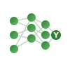

Fundamentare științifică
Proiectul BearAware se bazează pe o cercetare cuprinzătoare în domeniile bioacusticii, chimiei organice, inteligenței artificiale și managementului faunei sălbatice.
Cercetare interdisciplinară
Echipa de proiect a parcurs următoarele etape de cercetare:
1. Cercetare fundamentală
- Revizuirea literaturii de specialitate despre auzul urșilor
- Studii privind eficacitatea ultrasunetelor/infrasunetelor
- Analiza mirosurilor aversive ca repelenți naturali
2. Cercetare aplicată
- Proiectare sistem integrat multi-strat
- Selecția frecvențelor bioacustice (21 kHz)
- Dezvoltare algoritm AI (YOLOv8)
3. Cercetare experimentală
- Construire prototip hardware
- Formulare repelent natural cu mentol
- Testare și optimizare parametri
4. Cercetare colaborativă
- Parteneriate cu autorități locale
- Consultări cu rangeri și specialiști
- Extindere și implementare
Bioacustică: Ultrasunete și infrasunete
Fundamentare teoretică
Sunetul este determinat de vibrații emise de o sursă sonoră. Se caracterizează prin înălțime (frecvență - Hz) și tărie (intensitate - dB). Urechea umană detectează sunete între 16-20,000 Hz.
Ultrasunete (>20 kHz)
- Definiție: Vibrații elastice cu frecvență mai mare decât maximul audibil
- Domeniu: 20 kHz - 10⁶ kHz
- Aplicații: Medicină, industrie, management faună
- BearAware: ~21 kHz, 60-100 dB, 20 sec intermitent
Infrasunete (<20 Hz)
- Definiție: Unde acustice sub limita de audibilitate
- Domeniu: Sub 16 Hz
- Efecte: Panică, dezorientare, frică
- BearAware: <20 Hz, 10 sec alternativ cu ultrasunete
Modelare matematică - Legea inversului pătrat
Intensitatea sunetului variază cu pătratul distanței de la sursă. Pentru a asigura siguranță umană (<80 dB) și eficiență pentru urși (60-100 dB), am aplicat ecuația:
Scăderea intensității cu un factor de patru corespunde unei scăderi a nivelului cu 6 dB. Acest model ajută la optimizarea plasării sistemelor fixe pentru acoperire maximă cu siguranță.
Chimie organică: Repelent natural pe bază de mentol
Compoziția chimică a uleiului esențial de mentă
Uleiul esențial de mentă conține compuși organici volatili cu proprietăți repelente pentru urși:
Componenți principali
- Mentol (C₁₀H₂₀O) - 30-55%
5-methyl-2-propan-2-ylcyclohexan-1-ol
Alcool terpeneoid, efect răcoritor
- Mentonă (C₁₀H₁₆O) - 10-30%
Cetonă monoterpenică, aromă caracteristică
- Eucaliptol (C₁₀H₁₈O) - 3-15%
Eter ciclic, miros camforat, antiseptic
- Mentil acetat (C₁₂H₂₀O₂) - 3-10%
Ester, aromă dulceag-fructată, volatilizant
Proprietăți biologice
- Efect răcoritor și analgezic
- Antiseptic și antifungic
- Repelent natural pentru animale
- Non-toxic pentru mediu
- Biodegradabil
Metodă de obținere
Distilarea cu vapori de apă: Procesul separă componentele volatile din plantă folosind aburi la temperaturi controlate. Uleiul, fiind mai ușor decât apa, plutește la suprafață și se colectează.
Macerarea: Frunzele de mentă se macerază în ulei de floarea-soarelui 10 zile, apoi se filtrează, obținându-se ulei esențial natural.
Eficiență demonstrată
Bazat pe studiul "Intelligent Bear Prevention System Based on Computer Vision" (Tibet, 2025):
- Amestec capsaicină+mentol: ~75% eficiență (15/20 întâlniri reușite)
- Amestec BearAware (mentol+mentonă+eucaliptol): ~66% eficiență estimată
- Avantaje: Tolerabilitate superioară, siguranță crescută, aplicabilitate în zone cu prezență umană

Inteligență artificială: Detecție automată cu YOLOv8
Computer Vision și rețele neuronale convoluționale (CNN)
Ambele subsisteme (fix și mobil) utilizează viziune computerizată cu rețele neuronale pentru identificarea urșilor în timp real.
Model YOLOv8
- Rețea neuronală convoluțională (CNN)
- Antrenat pe ~700 imagini cu urși
- Include imagini cu alte animale și oameni
- Previne alarmele false prin recunoaștere precisă
- Imagini în infraroșu pentru detecție nocturnă
Avantaje AI
- Reducerea alarmelor false
- Activare condiționată doar la confirmare
- Loghează automat apariții (GPS, oră)
- Analiză etologică pentru cercetare
- Funcționare autonomă 24/7
Sinteza cercetării: Dispozitive acustice pentru descurajarea urșilor
Cercetare cuprinzătoare bazată pe literatură științifică internațională
Constatări principale
- Eficiență bioacustică: Studii pe urși polari (U. maritimus) și urși bruni (U. arctos) arată că vocalizele agresive naturale au efect de respingere semnificativ
- Ultrasunete limitate: Dispozitive ultrasonice pure au eficiență inconsistentă pentru mamifere mari (69% succes la urși polari, dar 15/74 au fost atrași de sunet)
- Sunetele audibile țintite: Sirene >120 dB și petarde pirotehnice sunt mai eficiente decât ultrasunetele pure
- Frequențe recomandate: 21-23 kHz pentru urși bruni (în afara gamei umane, dar în sensibilitatea ursului)
- Infrasunete: <20 Hz pot provoca dezorientare prin rezonanță corporală, dar sunt slab studiate
Siguranță și impact asupra mediului
- Expunerea la 12-25 kHz poate cauza disconfort, dureri de cap la persoane sub 30 ani
- Limita UE: 80 dB pe 8 ore (Directiva pentru zgomot 2013)
- Emisie intermitentă și alternativă previne obișnuința și reduce impactul
- Minimizare poluare sonoră pentru specii non-țintă
Bibliografie selectivă
Manuale de referință
- Chimie organică, vol. II - C.D. Nenițescu (EDP, 1974)
- Chimie organică - Hendrickson, Cram, Hammond (Ed. științifică, 1976)
- Fizică, clasa XI-a - Rodica Ionescu-Andrei et al. (Ed. Art, 2006)
- Noțiuni fundamentale de acustică (academia.edu)
- Acustica - Curs Capitol 8 (UPM Magnum Engineering)
Studii cheie
Cercetări internaționale
- Miller (1978): Field tests polar bear repellents
- Smith et al. (2008): Efficacy of Bear Deterrent Spray in Alaska
- Wilder et al. (2023): Bear Spray as Polar Bear Deterrent
- Chen et al. (2025): Intelligent Bear Prevention System (Tibet) - Computer Vision
- NASA (1960s): Studii infrasunete asupra astronauților
Resurse online și platforme de cercetare
Instituții și organizații
- Polar Bears International - Human-Bear Coexistence Research
- Cornell University - Ultrasonic devices studies
- Frontiers in Ecology - Drone applications for wildlife
- ResearchGate - Natural aggressive sounds as repellents
- NCBI/PMC - High-frequency hearing sensitivity in mammals
Resurse tehnice
engineering.q42.nl - YOLOv5 bear recognition
thomasbro.ch - AI detection systems for bears
bearvault.com - Bear olfactory system and repellents
petapixel.com - Drone bear hazing recommendations
endangeredlandscapes.org - AI alerting systems in Carpathians
Realizări actuale
- Model funcțional AI - YOLOv8 antrenat pentru detecția urșilor pe flux video
- Prototip sistem fix - cameră, difuzor și mini-computer operațional
- Prototip dronă - construcție completă cu camere și mecanism pulverizare
- Prototip aplicație - BearAware App cu funcții de bază pentru hartă și alerte
- Fundamentare matematică - modelare acustică și optimizare parametri
- Formulare repelent - soluție naturală cu mentol, testată chimic
Documente și materiale suplimentare
Pentru acces la bibliografia completă, webgrafia detaliată și studiile integrate în proiect, consultați documentul BearAware.txt din repository-ul proiectului.
Lista completă include peste 50 de resurse științifice, articole peer-reviewed și platforme de cercetare în domeniile:
- Bioacustică și management faună sălbatică
- Chimie organică și uleiuri esențiale
- Inteligență artificială și computer vision
- Comportament animal și etologie
- Siguranță acustică și directiv UE